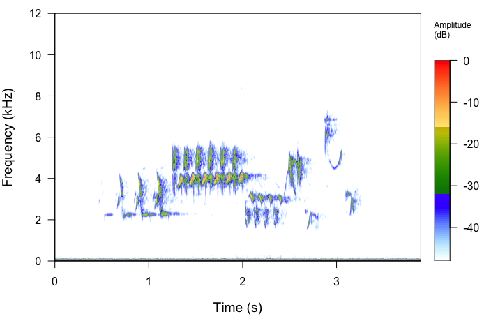

Publications list.
Publications
- Sánchez, N. V., B. Hilje, and E. M. Bayne. Lincoln’s Sparrow increases singing rate and song amplitude in areas with chronic industrial noise. (Accepted, Dec 7, 2022, Ibis International Journal of Avian Science)
Sánchez, N. V., L. Sandoval, R. W. Hedley, C.C. St Clair, and E.M. Bayne. 2022. Relative importance for Lincoln’s Sparrow (Melospiza lincolnii) occupancy of vegetation type versus noise caused by industrial development. Frontiers in Ecology and Evolution 10: 810087
Hannah, K. C., E. M. Bayne, and N. V. Sánchez. 2020. First description of the structure and geographic patterns in the songs of the Connecticut Warbler (Oporornis agilis). The Wilson Journal of Ornithology. Vol: 132.
Sherry, T. W., C. Kent, N. V. Sánchez, and C. Sekercioglu. 2020. Special Feature - Neotropical Ornithology - Insectivorous birds in the Neotropics: ecological radiations, specialization, and coexistence in species-rich communities. The Auk 137:1-27.
Hilje, B, N. V. Sánchez, E. M. Bayne, and A. Sánchez-Azofeifa. 2020. Bird assemblage recovery in a chronosequence of tropical dry forest in Costa Rica. Forest 11, 629
Sánchez, N. V., L. E. Vargas-Castro, and G. Barrantes. 2018. Nestling feeding, nest success, and notes on parental care in Clay-colored Thrush (Turdus grayi): the role of females and males. The Wilson Journal of Ornithology 130: 437-444.
Vargas-Castro, L. E., N. V. Sánchez, and G. Barrantes. 2015. Song plasticity over time and vocal learning in clay-colored thrushes. Animal Cognition 18: 1113-1123.
Hilje, B. and N.V. Sánchez. 2015 Incilius melanochlorus and Craugastor mimus: Body gigantism. Mesoamerican Herpetology 2: 330-332.
Sánchez, N.V., L. E. Vargas-Castro, G. Avalos, and F. Paniagua. 2014. Effect of prey availability on the abundance of White-breasted Wood-Wrens, insectivorous birds of tropical lowland forests. Journal of Field Ornithology 85: 347-354.
Sánchez, N.V., and D. A. Martínez-Cascante. 2014. Patrones de forrajeo del cuyeo (Nyctidromus albicollis) en noches de luna, Palo Verde, Costa Rica. Zeledonia 18: 18-27.
Sánchez, N.V., L. E. Vargas-Castro, A. Sánchez, and M. Amador. 2013. Riqueza y abundancia de mariposas diurnas, escarabajos coprófagos y plantas en cultivos orgánicos y convencionales de tres regiones de Costa Rica. Research Journal of the Costa Rican Distance Education University 5: 249-259.
Vargas-Castro, L. E., N. V. Sánchez, and G. Barrantes. 2012. Repertoire size and element sharing in the song of the Clay-colored Thrush Turdus grayi . The Wilson Journal of Ornithology 124: 446–453.
Vargas-Castro, L. E., N. V. Sánchez, and G. Avalos. 2011. Forest structure and territory size relationship in the neotropical understorey insectivore Henicorhina leucosticta. Journal of Tropical Ecology 27: 65-72.
Peinador, G., F. J. Chavarría-Ñamendi, J. C. de la Cruz Godoy, C. Gelabert, D. Martínez Cascante, W. C. Paniagua Palacios, N. V. Sánchez, K. D. Sibaja y A. Tejeda Tellez. 2010. Impacto antrópico en el Manto Acuífero Barva (Heredia, Costa Rica) con énfasis en el uso del suelo (1992-2006). Research Journal of the Costa Rican Distance Education University 3: 71-80.

Lincoln’s Sparrow (Melospiza lincolnii) song (Spectrogram view) image.